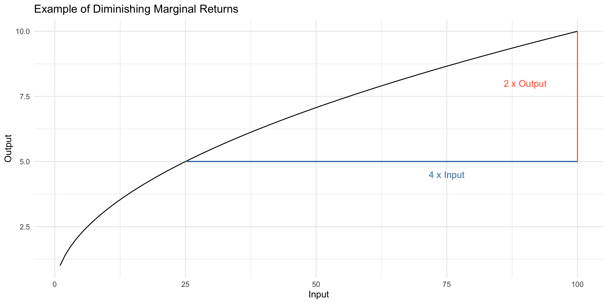
2025-10-02
I want you to…
You should take from this…
“The most basic principle that every teacher should know about teaching … is that the brain learns the thinking it practices, but little else. To have students learn to recognize relevant features and make relevant decisions more like an expert in the field, they must practice doing exactly this.” (Wieman 2019)
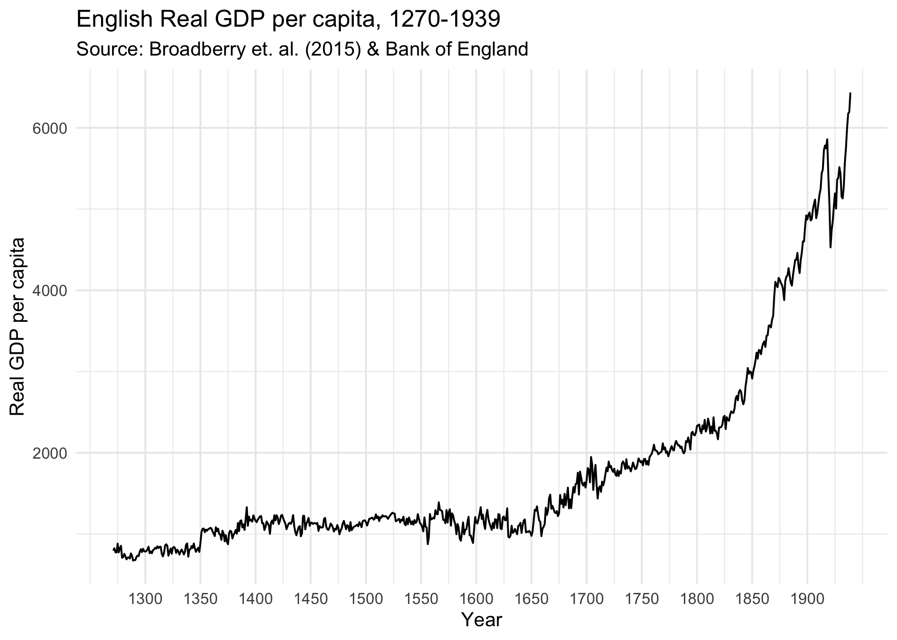
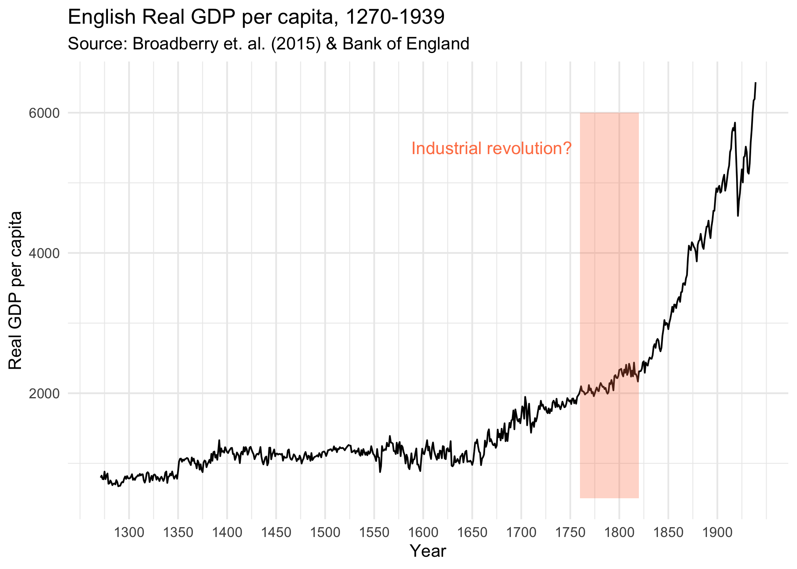
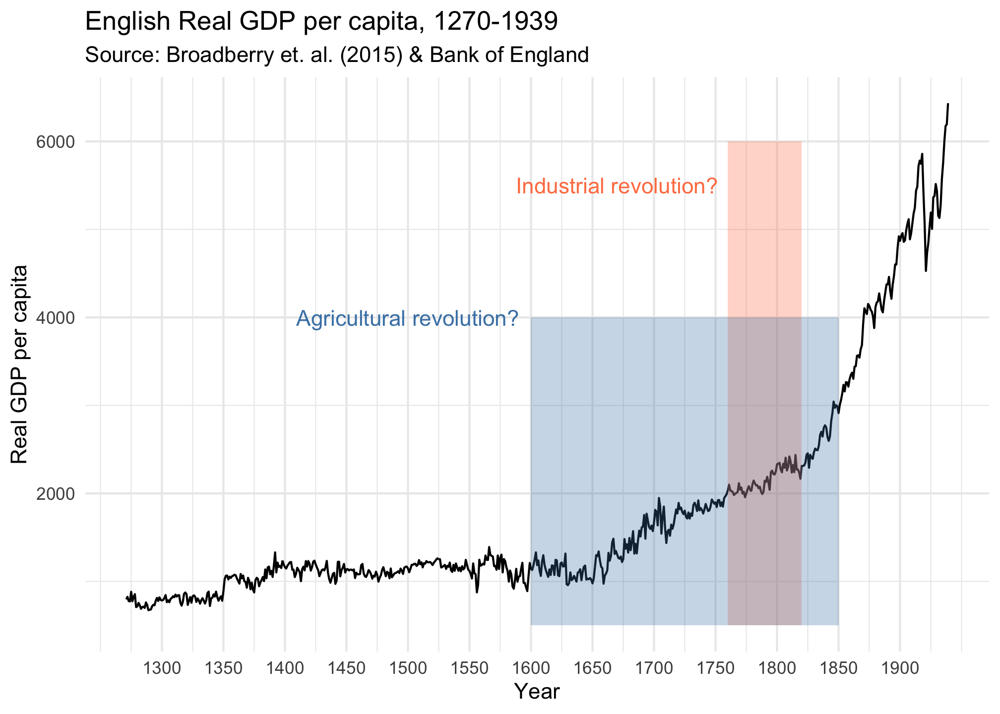
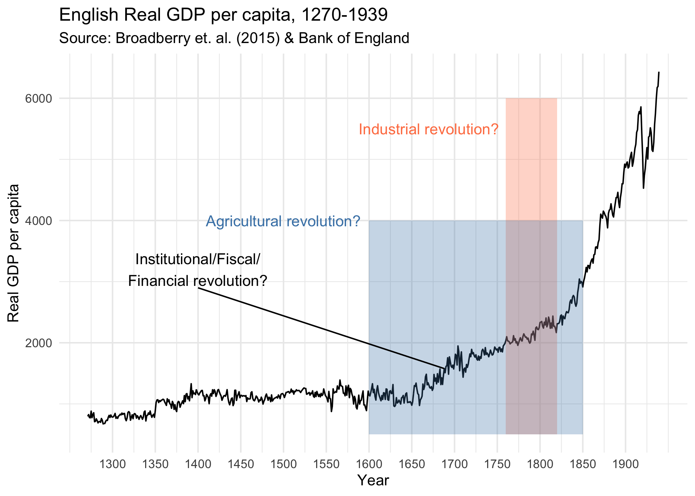
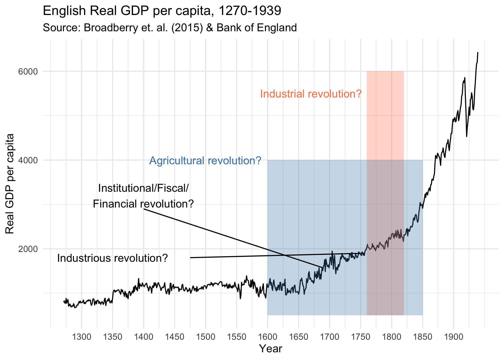
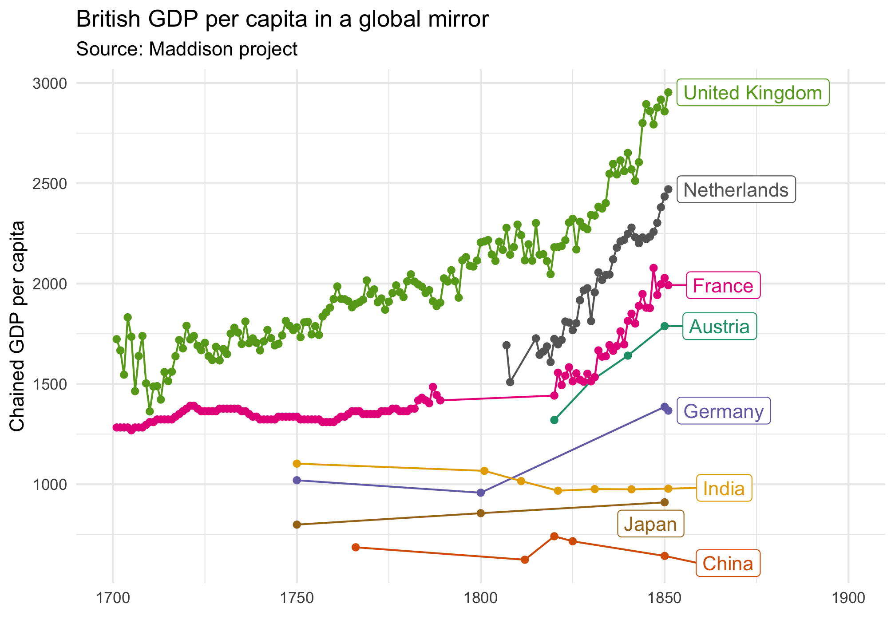
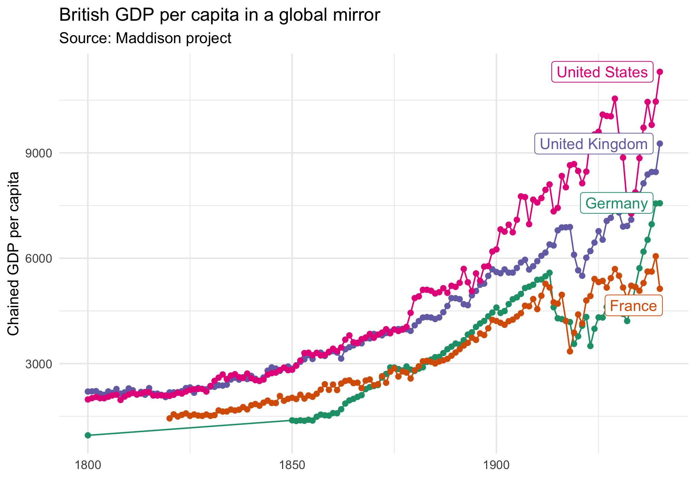
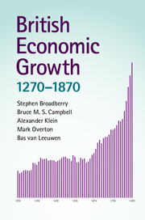
Three ways to measure GDP
\(GDP =(\texttt{daily wage-rates} \times \texttt{days worked}) + \\ (\texttt{return on capital} \times \texttt{capital stock}) + \\ (\texttt{rent} \times \texttt{land area})\)
\(GDP = \texttt{consumption} + \texttt{investment} + \texttt{government spending} + \\ \texttt{net exports}\)
\(GDP = \texttt{agricultural value added} + \texttt{industrial value added} + \\ \texttt{services value added}\)
Broadberry et al. (2012) attempt the output approach.
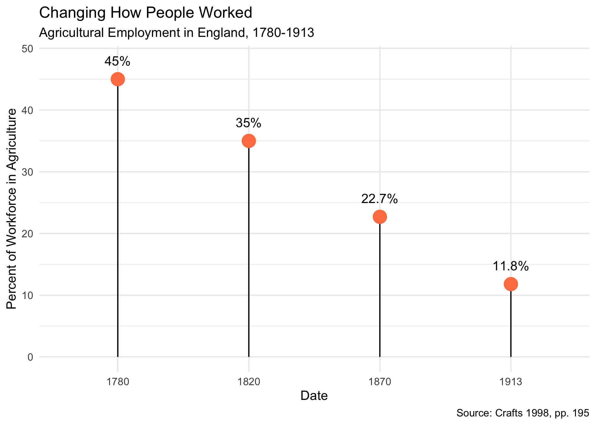

And yet population grows!
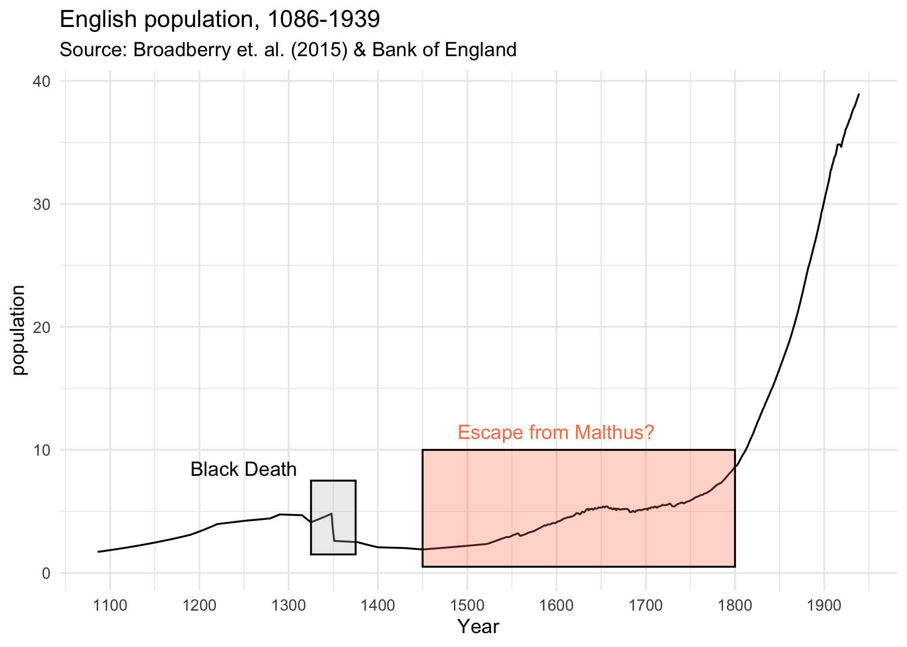
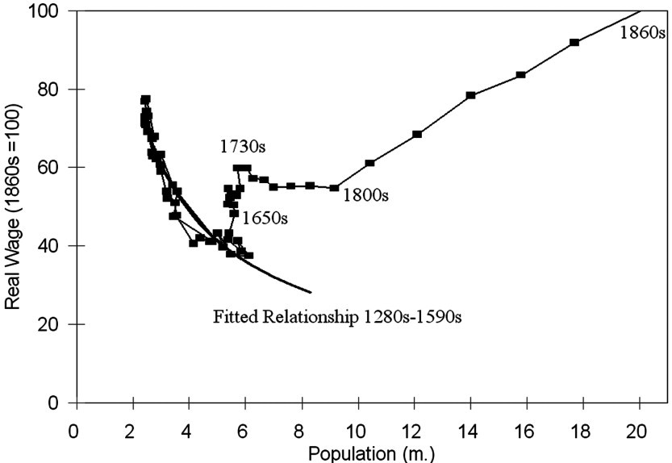
Malthus before 1600?
“The diminution of price has . . . been most remarkable in those manufactures of which the materials are the coarse metals. A better movement of a watch, that about the middle of the last century could have been bought for twenty pounds, may now perhaps be had for twenty shillings.”
—Adam Smith (1976 , bk. 1, ch. 11, pt. 3) Kelly and O Grada (2016) )
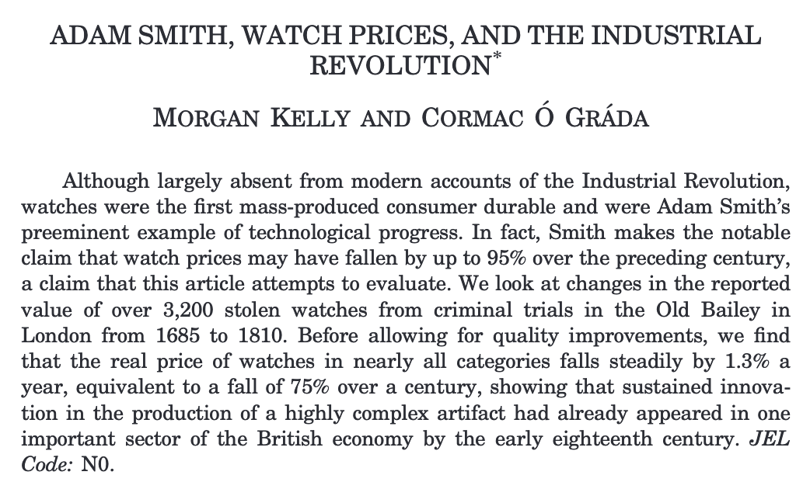
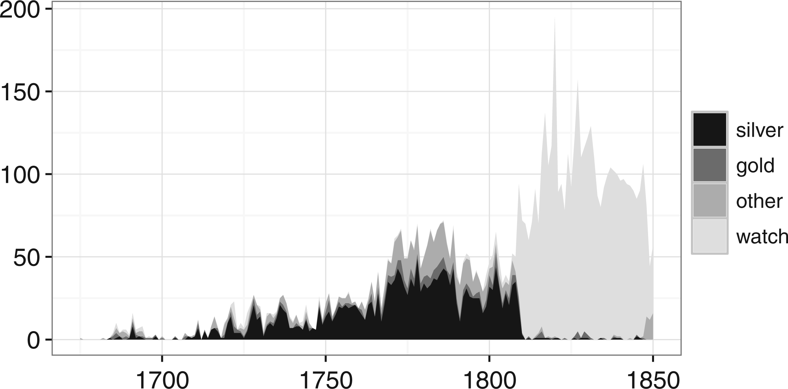
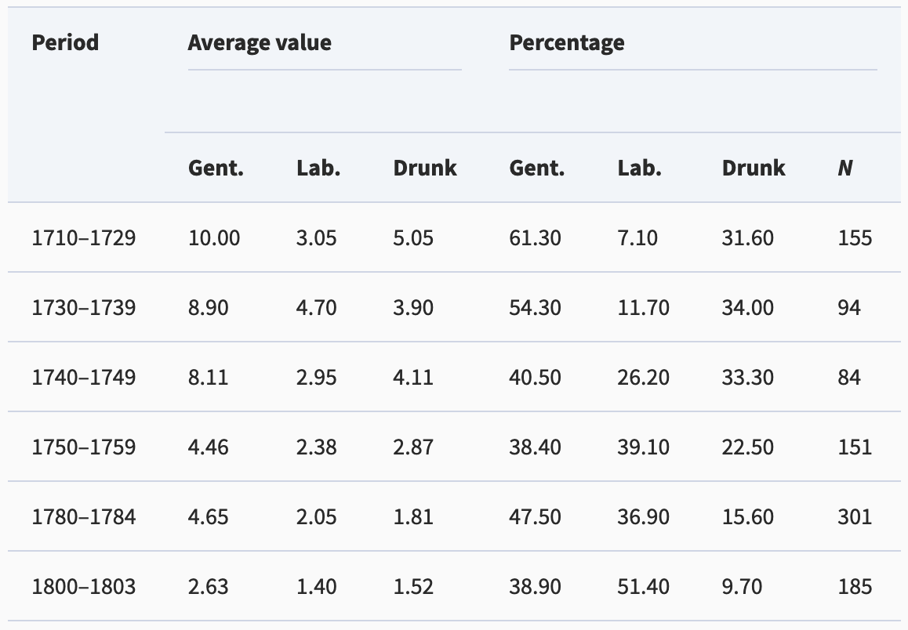
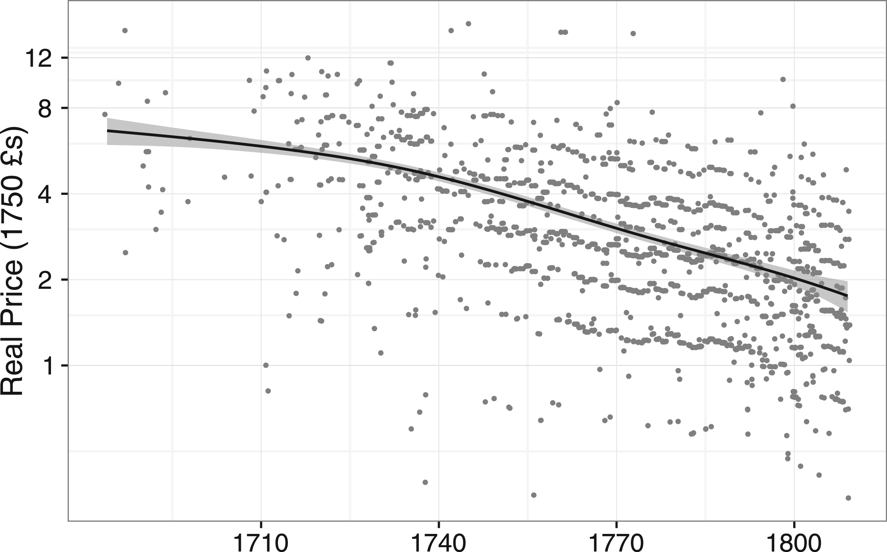
In a mid-eighteenth-century description of London trades, Campbell (1747 , p. 250) described how watches “at their first appearance . . . were began and ended by one man who was called a watchmaker” but “of late years the watchmaker . . . scarce makes anything belonging to a watch. He only deploys the different tradesmen among who the art is divided.” Kelly and O Grada (2016)
“…if the Demand of Watches shou’d become so very great as to find constant imployment for as many Persons . . . the Maker of the Pins, or Wheels, or Screws, or other Parts, must needs be more perfect and expeditious at his proper work, . . . than if he is also to be imploy’d in all the variety of a Watch.” Kelly and O Grada (2016)
name: clarkvbroadberry
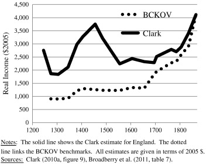